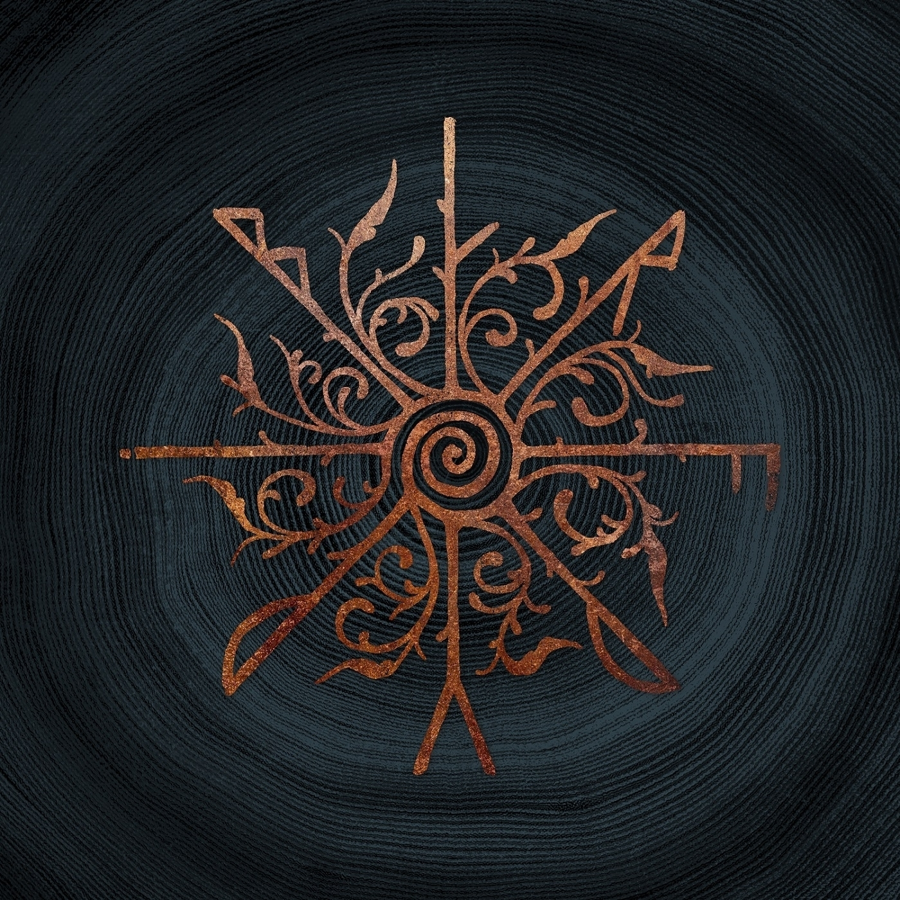

Gåte — Sigil
2026 · folk rock, electronic · Норвегия

В 2024 году Gåte представляли Норвегию на «Евровидении» в Мальмё с «Ulveham» — переработанной традиционной балладой. Путь на конкурс группа прошла через победу в национальном конкурсе, а в финале заняла 25-е место с 16 баллами. Конкурсного триумфа не случилось, но спустя два года группа выпускает альбом «Sigil».
Девять треков, общей продолжительностью чуть меньше тридцати семи минут, в которых национальные инструменты, среди которых: хардингфеле, никельхарпа и колесная лира соседствуют с гитарами, басом, барабанами и электронными текстурами. Традиционные мелодии здесь ведут песни, современный инструментарий даёт им вес.